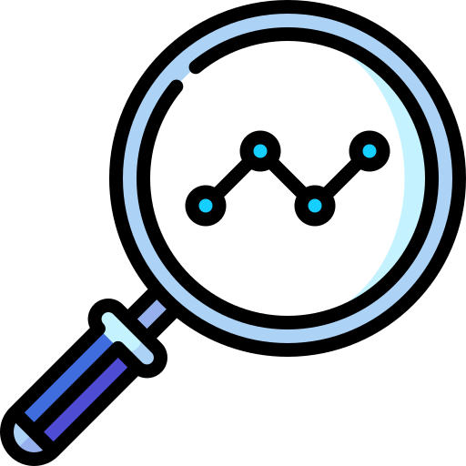

Fase 1 | Opzet
In de opzetfase inventariseren we wat er moet gebeuren om uw taak uit te voeren en formuleren we een aantal uitgangspunten waar uw ontwerp aan moet voldoen.
Ontdek fase
In de opzetfase inventariseren we wat er moet gebeuren om uw taak uit te voeren en formuleren we een aantal uitgangspunten waar uw ontwerp aan moet voldoen.
Nu wordt het tijd om te kijken hoe het resultaat eruit zou kunnen zien.
In de bouwfase realiseren we de beslissingen uit de ontwerpfase in HTML, CSS en JS.
In de testfase controleren we of de aanpassingen werken zoals bedoeld. Dit kan een technische-test zijn, maar ook een test met gebruikers.
In de opleverfase voeren we alle aanpassingen door voor het perfecte eindresultaat.